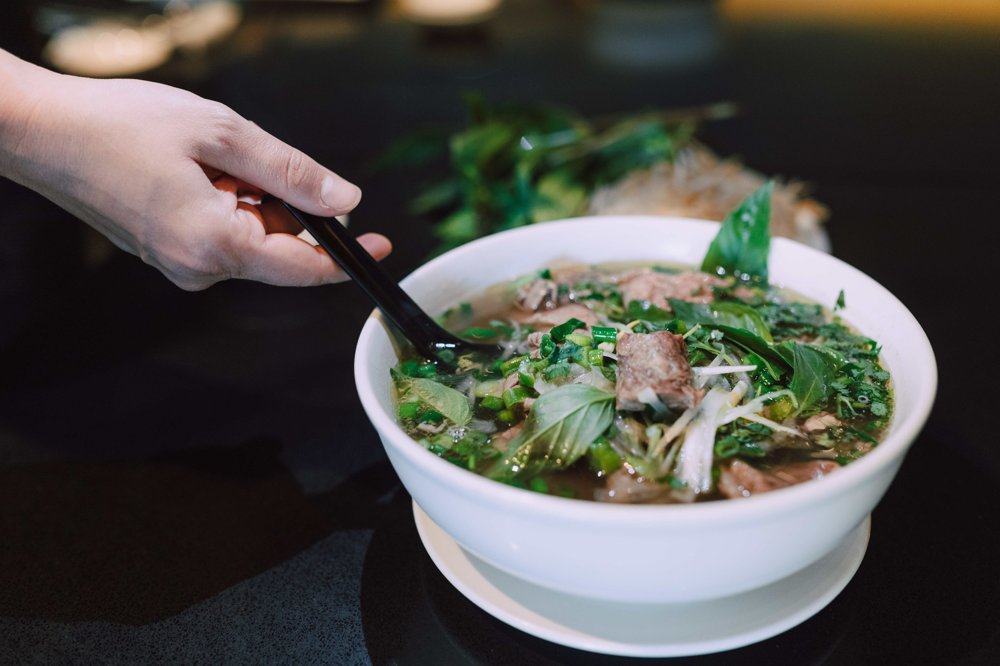

Pho Recipe

How to make pholicious PHO!
Pho is a must try! This rice noodle soup dish is amazing to eat on a cold rainy day or after a long
night of
drinking booze! Some say it's the best cure for a hangover! All and all, pho is delicously fantastic.
Ingredients:
- Rice noodles
- 1/2 lb of sirloin steak
- 1/2 lb of beef bone
- 1 yellow onion and 1 ginger
- 1 cup of Brown sugar
- Spices: 1.5 tbsp of coriander, 2 cinnamon sticks, and 10 star anises
- Garnishes: green onion, cilantro, bean sprout, and lime
- Sauces: fish sauce, sriracha, and hoison
Steps:
- Boil the sirloin steak and beef bones in a large pot of water for 20 minutes.
- After 20 minutes, drain the water and clean off the scum from the meat and bones.
- Refill the large pot of meat and bones with water and reheat until broth is boiling hot.
- Cut the yellow onion and ginger in half.
- In a frying pan, roast the onion and ginger until charred on each sides.
- Add the charred onion and ginger to the broth.
- In a frying pan, roast the spices: coriander, cinnamon stick, and star anise until you get a very
flagrant
scent.
- Add the spices to the broth.
- Lower the oven temperature to simmer.
- Season broth with 1 cup of fish sauce, 1 cup of brown sugar, and salt.
- Simmer broth for 2 hours before serving.
- After 2 hours, remove the spices from the broth.
- Take out the sirloin steak and cut it into small slices.
- In a small pot, boil the rice noodles in water until it is soft.
How to eat Pho:
- First, add boiled rice noodles into a bowl.
- Garnish with green onion, cilantro, bean sprout, and sprinkle of lime.
- Add in the sliced beef.
- Use a ladle to pour the hot broth into the bowl.
- Finish off with fish sauce, sriracha, and hoison.
- Mix thoroughly and re-season to one's liking.
- ENJOY!
Back to Odin Recipes